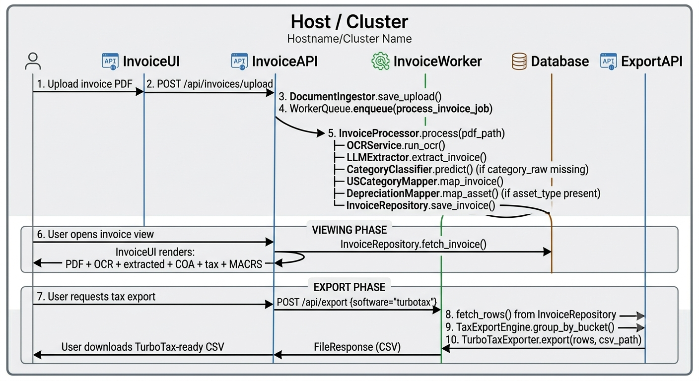
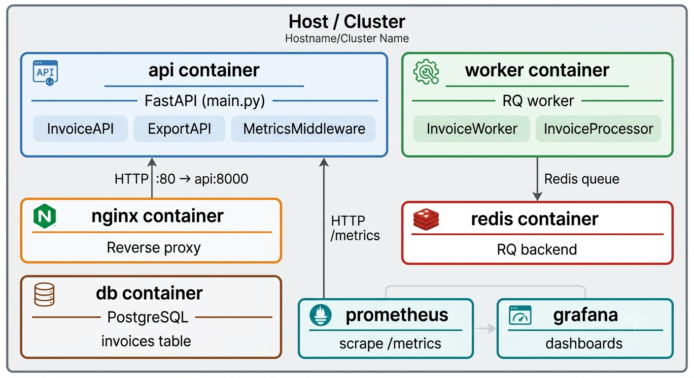

AI-Assisted Tax Reporting
The idea
Receipts and invoices arrive as PDFs. A human reads them, categorizes the expenses, and manually re-enters the data into bookkeeping software — then remaps everything again for tax season. This pipeline automates every step, from raw PDF ingestion to tax-software-ready CSV exports, with no manual data entry in between.

Architecture
The system is built around a two-stage RQ (Redis Queue) pipeline with three queues:
- ocr — PDF-to-Markdown extraction via Marker or Docling
- llm — Markdown-to-structured JSON via LLM (NVIDIA Llama 3 70B or Ollama)
- dead_letter — failed jobs routed here for manual review
OCR workers write Markdown output, then enqueue an LLM job. LLM workers parse the response JSON from inside ```json ... ``` fences and write three output files per document: {id}.json (structured invoice), {id}.meta.json (anomalies), and {id}.stats.json (monitoring counters).

Pipeline stages
Document Ingestion — PDFs uploaded through the FastAPI web UI or batch-submitted via
scripts/submit_jobs.py.OCR — Two parallel extraction paths: Marker (
from marker.converters.pdf import PdfConverter) and Docling. Each writes Markdown then enqueues an LLM job on its paired queue.LLM Extraction — Two parallel LLM paths: a factory-based backend (agnostic to provider via
LLM_BACKENDenvironment variable, supporting NVIDIA and Ollama) and a dedicated NVIDIA-only path. Both use temperature 0.0 for deterministic output and parse JSON from```jsonfences.Invoice Data Model — A Pydantic-validated
Invoiceschema with nestedParty(name, address, phone, email, tax_id) andLineItem(description, quantity, unit_price, total) models.Postprocessing — Table reconstruction, currency and locale normalization, duplicate detection, anomaly flagging.
Category Classification —
CategoryClassifierpredicts raw expense categories.USCategoryMappermaps those to chart-of-accounts entries and IRS tax buckets.DepreciationMapperidentifies MACRS depreciation classes for fixed assets.Tax Export — Six export engines produce CSVs for every major US tax software platform:
- TurboTax, HRBlock, TaxAct, ProSeries, Drake, Lacerte
Each maps categories to the correct IRS form line codes (Schedule C, 1120, 1120S, 1065) and emits software-specific column headers.
Tax line code mapping
TAX_LINE_CODES = {
"Office Expense": {
"1040C": "Schedule C Line 18",
"1120": "26", "1120S": "20", "1065": "20",
},
"Travel": {
"1040C": "Schedule C Line 24a",
"1120": "26", "1120S": "20", "1065": "20",
},
"Utilities": {
"1040C": "Schedule C Line 25",
"1120": "26", "1120S": "20", "1065": "20",
},
"Meals (50%)": {
"1040C": "Schedule C Line 24b",
...
},
}
Deployment
Full stack orchestrated via Docker Compose with seven services:
| Service | Role |
|---|---|
| redis | Message broker for RQ queues |
| rq-dashboard | Queue monitoring UI (port 9181) |
| web-ui | FastAPI + Jinja2/HTMX frontend (port 9000) |
| ocr-worker | RQ worker on the ocr queue |
| llm-worker | RQ worker on the llm queue |
| prometheus | Metrics collection |
| grafana | Dashboard visualization |
| postgres | Invoice + mapping persistence |
| nginx | Reverse proxy |
Running it
# Full stack
docker compose up
# Or run components individually:
uvicorn main:app --host 0.0.0.0 --port 9000 --reload
rq worker ocr --url $REDIS_URL
rq worker llm --url $REDIS_URL
python -m scripts.submit_jobs # batch submit all PDFs in data/input/
Stack
- OCR: Marker, Docling
- LLM: NVIDIA Llama 3 70B (primary), Ollama (fallback)
- Queue: RQ + Redis
- API: FastAPI + Uvicorn
- UI: Jinja2 templates + HTMX
- Validation: Pydantic
- Data: PostgreSQL
- Monitoring: Prometheus + Grafana
- ML: scikit-learn (category classifier)
- Deployment: Docker, docker-compose, Helm